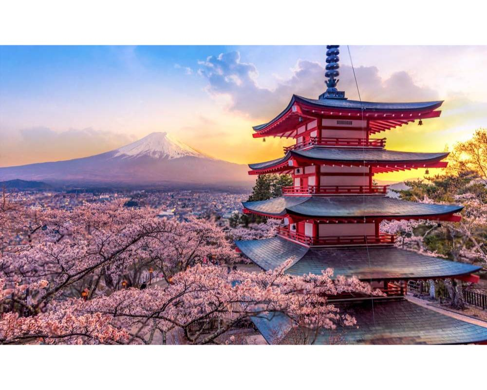

keliones i bosnija ir hercegovina | kelione i bosnija ir hercegovina | egzotines keliones i bosnija ir hercegovina | egzotine kelione i bosnija ir hercegovina | keliones i slovakija | kelione i slovakija | egzotines keliones i slovakija | egzotine kelione i slovakija | keliones i izraeli | kelione i izraeli | egzotines keliones i izraeli | egzotine kelione i izraeli | keliones i estija | kelione i estija | egzotines keliones i estija | egzotine kelione i estija | keliones i meksika | kelione i meksika | egzotines keliones i meksika | egzotine kelione i meksika | keliones i norvegija | kelione i norvegija | egzotines keliones i norvegija | egzotine kelione i norvegija | keliones i japonija | kelione i japonija | egzotines keliones i japonija | egzotine kelione i japonija | keliones i latvija | kelione i latvija | egzotines keliones i latvija | egzotine kelione i latvija | keliones i apulija | kelione i apulija | egzotines keliones i apulija | egzotine kelione i apulija | keliones i piza | kelione i piza | egzotines keliones i piza | egzotine kelione i piza | keliones i kalabrija | kelione i kalabrija | egzotines keliones i kalabrija | egzotine kelione i kalabrija | keliones i niujorka | kelione i niujorka | egzotines keliones i niujorka | egzotine kelione i niujorka | keliones i madeira | kelione i madeira | egzotines keliones i madeira | egzotine kelione i madeira | keliones i kemera | kelione i kemera | egzotines keliones i kemera | egzotine kelione i kemera | keliones i florencija | kelione i florencija | egzotines keliones i florencija | egzotine kelione i florencija | keliones i rimini | kelione i rimini | egzotines keliones i rimini | egzotine kelione i rimini | keliones i sarm el seicha | kelione i sarm el seicha | egzotines keliones i sarm el seicha | egzotine kelione i sarm el seicha | keliones i barselona | kelione i barselona | egzotines keliones i barselona | egzotine kelione i barselona | keliones i gran kanarija | kelione i gran kanarija | egzotines keliones i gran kanarija | egzotine kelione i gran kanarija | keliones i antalija | kelione i antalija | egzotines keliones i antalija | egzotine kelione i antalija | keliones i marsa alama | kelione i marsa alama | egzotines keliones i marsa alama | egzotine kelione i marsa alama | keliones i viena | kelione i viena | egzotines keliones i viena | egzotine kelione i viena | keliones i talina | kelione i talina | egzotines keliones i talina | egzotine kelione i talina | keliones i stokholma | kelione i stokholma | egzotines keliones i stokholma | egzotine kelione i stokholma | keliones i dubaju | kelione i dubaju | egzotines keliones i dubaju | egzotine kelione i dubaju | keliones i kerkyra | kelione i kerkyra | egzotines keliones i kerkyra | egzotine kelione i kerkyra | keliones i korfu | kelione i korfu | egzotines keliones i korfu | egzotine kelione i korfu | keliones i helsinki | kelione i helsinki | egzotines keliones i helsinki | egzotine kelione i helsinki | keliones i roda | kelione i roda | egzotines keliones i roda | egzotine kelione i roda | keliones i stambula | kelione i stambula | egzotines keliones i stambula | egzotine kelione i stambula | keliones i praha | kelione i praha | egzotines keliones i praha | egzotine kelione i praha | keliones i varsuva | kelione i varsuva | egzotines keliones i varsuva | egzotine kelione i varsuva | keliones i tenerife | kelione i tenerife tenerife | egzotines keliones i tenerife | egzotine kelione i tenerife | keliones i hurgada | kelione i hurgada | egzotines keliones i hurgada | egzotine kelione i hurgada | keliones i malaga | kelione i malaga | egzotines keliones i malaga | egzotine kelione i malaga | keliones i berlyna | kelione i berlyna | egzotines keliones i berlyna | egzotine kelione i berlyna | keliones i balio sala | kelione i balio sala | egzotines keliones i balio sala | egzotine kelione i balio sala | keliones i evija | kelione i evija | egzotines keliones i evija | egzotine kelione i evija
Ekspromtu Tours – jūsų kelionių partneris į nepakartojamas patirtis. Siūlome egzotines ir autentiškas keliones į Bosniją, Meksiką, Izraelį, Balį ir daugelį Europos miestų – nuo Talino iki Romos.
PREKINTIS
egzotines keliones i bosnija ir hercegovina
Atraskite Bosnijos ir Hercegovinos paslaptis su Ekspromtu Tours
Bosnija ir Hercegovina – šalis, kurioje susitinka istorija, gamtos grožis ir šiltas Balkanų svetingumas. Jei ieškote naujų įspūdžių ir trokštate pamatyti autentišką, egzotišką vietą, Ekspromtu Tours kviečia jus į kelionę, kurią prisiminsite visą gyvenimą.
egzotines keliones i slovakija
Ekskursijų Guru: Kodėl Ekspromtu Tours yra geriausias pasirinkimas jūsų kelionei į Slovakiją?
Ar ieškote unikalaus nuotykio? Svajojate apie nepamirštamas keliones į Slovakiją, pilnas nuostabių gamtos vaizdų, kultūrinių atradimų ir ramybės? Ekspromtu Tours yra čia, kad jūsų svajonės taptų realybe. Mes pasiruošę pasiūlyti ypatingą, egzotinę kelionę į Slovakiją, kuri sužavės net pačius išrankiausius keliautojus.
egzotines keliones i izraeli
Ekspromtu Tours siūlo nepakartojamas keliones į Izraelį
Jei svajojate apie išskirtinę ir įsimintiną atostogų patirtį, Ekspromtu Tours yra pasiruošusi paversti jūsų svajones realybe. Mūsų siūlomos kelionės į Izraelį yra sukurtos taip, kad atitiktų kiekvieno keliautojo lūkesčius – nuo istorinių lankytinų vietų apžvalgos iki egzotinių nuotykių.
egzotines keliones i estija
Atraskite Estiją su Ekspromtu Tours: Egzotinės Kelionės Kaimynystėje
Estija – šalis, kurioje susipina unikalūs gamtos vaizdai, senovės architektūra ir moderni kultūra. Jei ieškote išskirtinės kelionės ar norite pamatyti kažką naujo, tačiau netolimo, Ekspromtu Tours turi jums puikų pasiūlymą. Kelionės į Estiją su mumis – tai patirtis, kuri sužavės kiekvieną keliautoją.
Ar turite klausimų dėl mūsų produktų, pristatymo proceso ar mokėjimo būdų?
Adresas:
Maironio g. 4, Utena,
28241, Lietuva